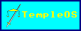
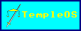

- 12/01/26 - Added tor and i2p mirrors
- 10/01/26 - Added The Black Tower to /books
- 07/01/26 - Added BuyMeACoffee to /music; added Claudine to /books; added updates block
- RSS Feed
Sign the guestbook?


 


Do you remember the taste of your mother's flesh? Do you remember the smell of the angel's milk? Do you remember the metal joints that were once your bones? Do you remember the sound of the thunder that was once your heart? The ivory is the amalgam in your teeth. The flowers sit between the tangled strands of your perfumed hair. Your mother has long been dead, but her mass remains hidden in the overgrown and forgotten realm of your home, with rusted pipes still extending from the meat. You opened your eyes a thousand years ago, but have only blinked today, moisturizing your eyes for the first time and with it storing your memories in the record. You begin a new life everyday if you have no attachment to anything. Every item left behind is reborn every hour. Nothing holds the traces of your touch anymore. Everything around you has become a faded and swirling mess, floating like gas that carries you with ease. You are heavy. You are light. You do not know grief, but you know warmth. You knew one warmth. It is now cold all around you. You do not know if you are lost or at your new home. You do not care to know. You look up to the saturated blue sky, and it returns your glimpse with a blinding beam of red light. You have a feeling that the beam was once a white bundle of rays that softly painted your surroundings, but you can never be sure. With each passing day, you bury more of the past under the soft and wet clumps of soil that make up your world. You continue to crawl towards a God you wish to find. It is all you have.